Mid to Route Exercise
This exercise has a similar outcome to the API Queries & Parameters exercise from Module 11. However, in this module, we were able to split our script into separate files to help clean up the code and apply an MVC pattern.
Middleware is a function available through Express. They are functions that have access to the request and response objects and the next function. This allows us to access a page, execute code, and then display it. We can also use middleware to change the request or the response objects. The way this is different from how we have been coding is that middleware lets us run a function without stopping the request-response cycle. You will see this method used a lot with logins. When a user logins in, we can use middleware to modify the response object so it sends information about the user from the database (req.user). We can also use middleware to query a database, making API calls, or handle errors.
Routes are code that controls the URL or path to a document. In other words, they control the response to certain client requests.When you use the Route methods available in Express this can let you modify your application so you can apply a MVC pattern to it. This stands for Model-View-Control. This pattern helps you create neater, more organized applications. The Model sets up the data structure. Basically, it decides when we need to use what information. The view defines what is being displayed. In the case of this exercise, those are our routes. The control has our logic. This is where our functions, database queries, expressions, etc. will be found.
In this exercise, we started by making a json file called data.js (this file is basically the same as the one from our M11 API Queries & Parameters Exercise). Our API is set up so that we created a constant and assigned an array made of objects to it. The objects will hold the properties for each item.
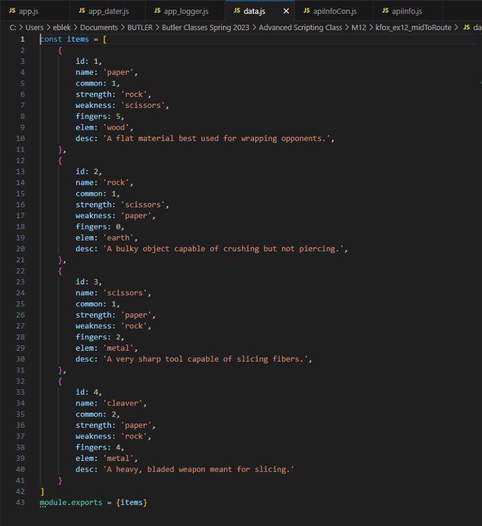In M11, all of our script was in one file called app.js. In this exercise, the functionality has been split across several files. For reference, I included screenshots of the folders containing each file.
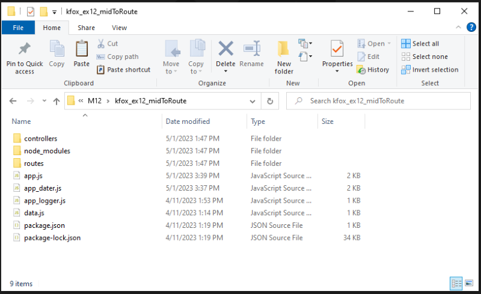 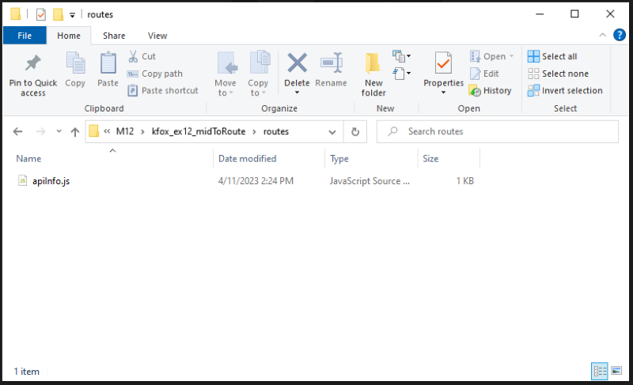
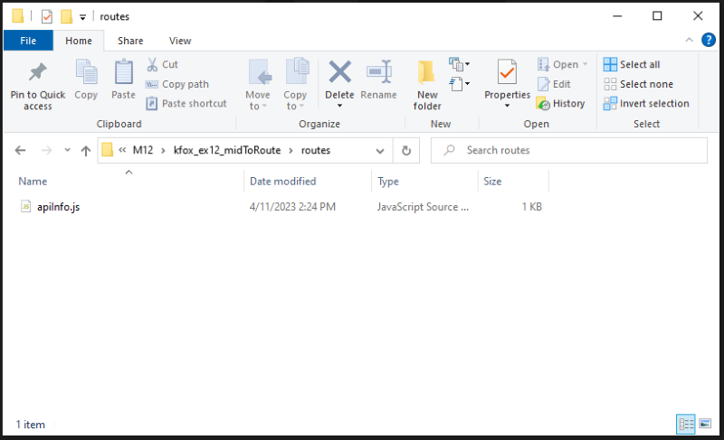
The "node_modules" folder contains the package.json files and modules such as Express.
Below, I am including the contents of each script that all work together with Routes to create a server, run middleware functions, and use parameters to filter our API items.
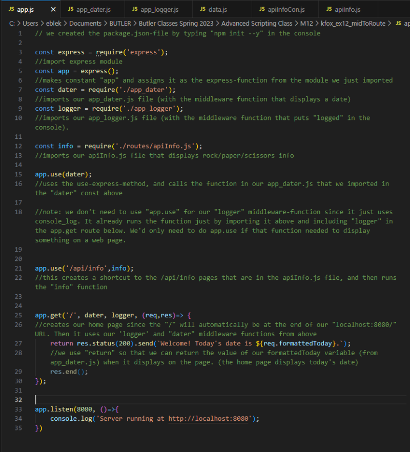 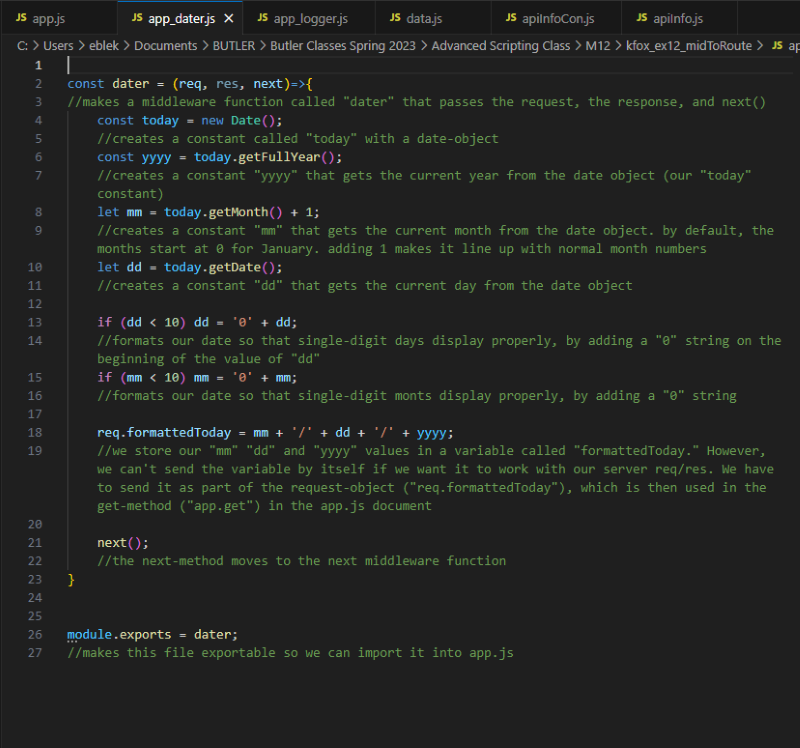 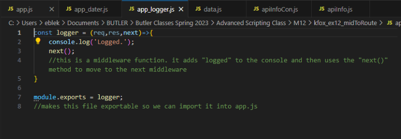Next, we have the apiInfoCon.js file from our "controllers" folder.
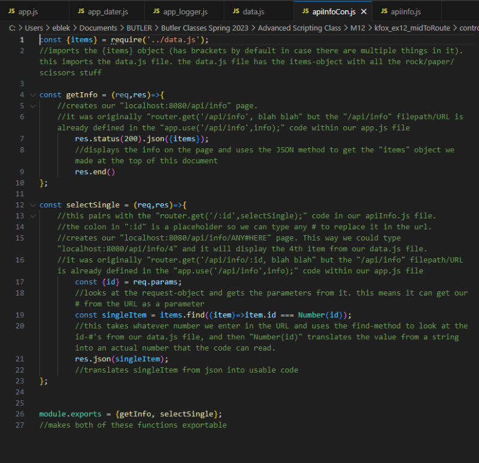We also have our apiInfo.js file from our "routes" folder.
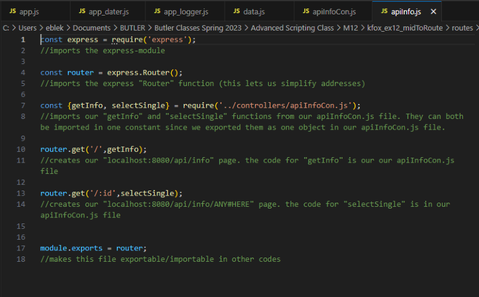To test our script, we run app.js in the Console.
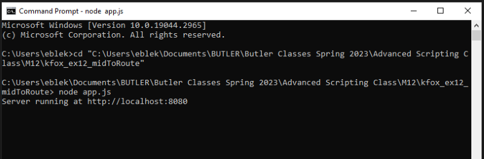Now that our server is running, we can visit localhost:8080 in a browser. The home page shows the results of our app_dater middleware function. Once we've viewed the homepage, the console shows the results of our app_logger middleware function.
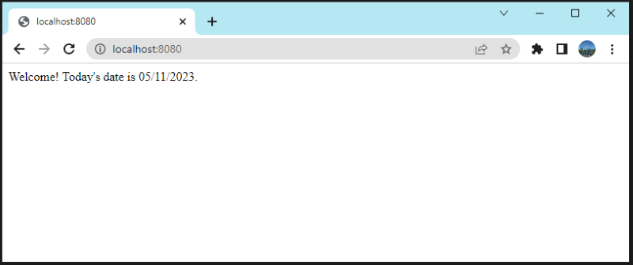 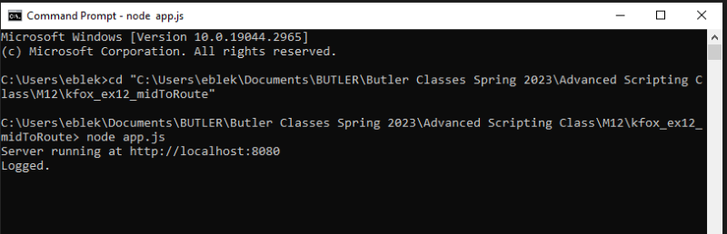Finally, we can try different URL's in the browser to view items from our API.
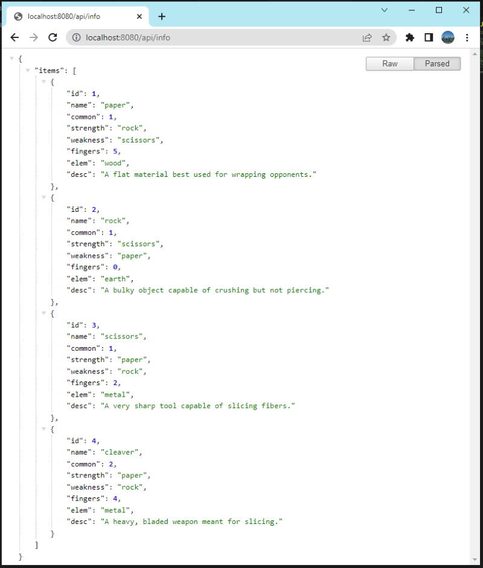 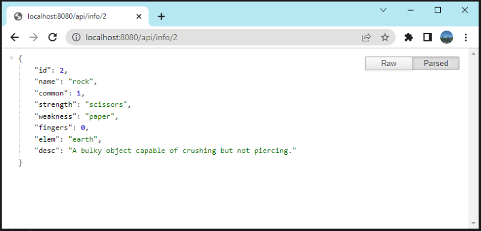